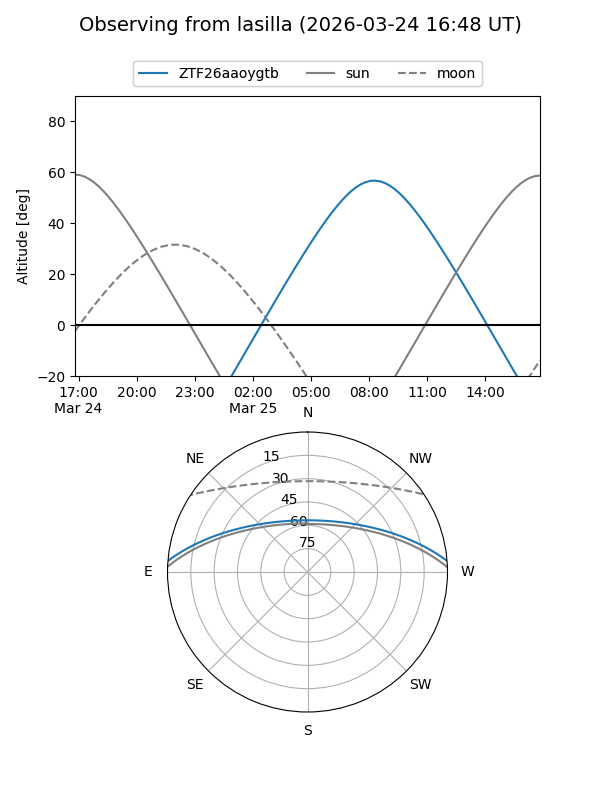
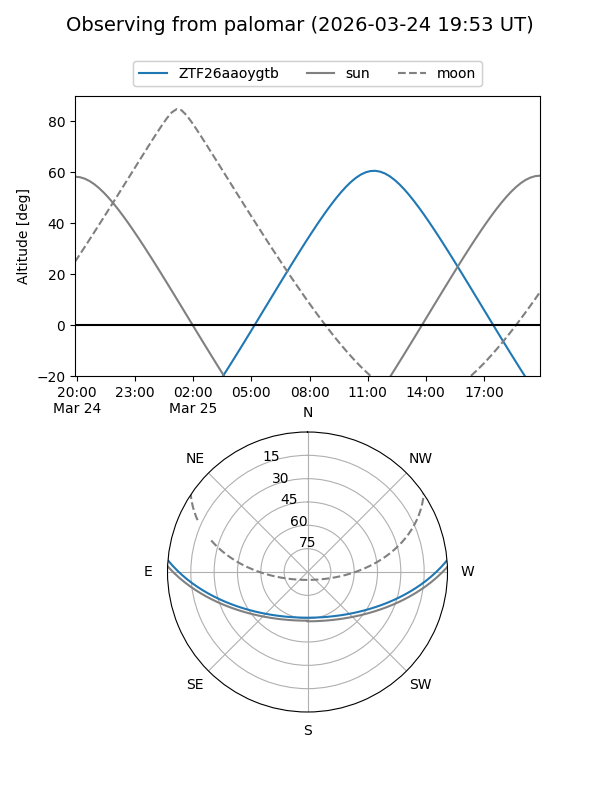

ZTF26aaoygtb
Target ZTF26aaoygtb at 2026-03-25 13:09
Aliases and brokers:
FINK: link
Lasair: link
ALeRCE: link
alt names
ZTF26aaoygtb (ztf,fink_ztf)
Coordinates:
equatorial (ra, dec) = 235.6117,+4.06797
equatorial (HMS+DMS) = 15:42:26.81,+04:04:04.70
galactic (l, b) = (11.1305,+43.17396)
Flags:
Photometry:
last ztfg=18.38, ztfr=18.03
1 ztfg, 1 ztfr detections
Lightcurve
Visibility


Additional plots